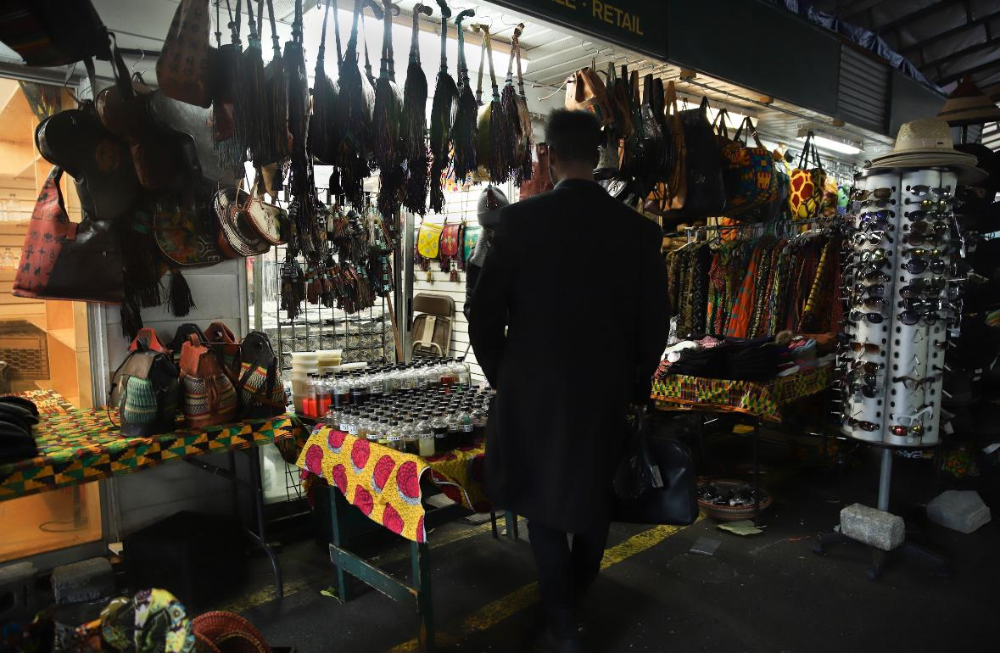
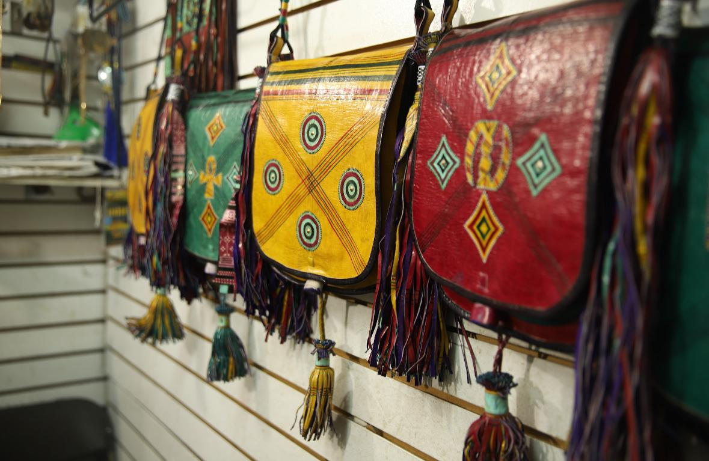

A TASTE OF HOME

For Congolese immigrants, food proves key in building community in NYC.
By Raymond DePaul
Edited by Deidre Foley
The warm autumnal hues decorating dishes like wali pilau, loso na madesu and ntaba comfort Iranga Tcheko, reminding the 28-year-old Manhattan woman of joyful Christmas dinners she enjoyed as a young child in Bukavu, in the Democratic Republic of Congo. The meals almost make her forget how she vomited while escaping her home country at age 3, her body “violently rejecting” what she had to leave behind.
Food is a grounding force for Tcheko, a Congolese immigrant living in Morningside Heights. Dishes from her home country help her shorten the nearly 7,000-mile distance from Congo to New York City. Food allows her and other African immigrants to cope with cultural differences and create community.
“I think we sometimes don’t fully appreciate how much food routes us to home,” said Tcheko.
Except for 2020, when COVID-19 restrictions kicked in, the number of Congolese refugees in the U.S. has dramatically risen over the past decade, with migration largely driven by political turmoil, violence and economic challenges. Since 2016, Congolese refugees have represented the largest number of refugees resettled in the U.S., according to Migration Policy Institute. Between October 2022 through May 2023, more than 10,000 refugees from the Democratic Republic of Congo have arrived in the country, making up a third of all U.S. refugee arrivals.
Tcheko came to New York in 2020 for graduate school, but before that, she spent the majority of her life in the United Kingdom. She and her family left the DRC amid a civil war, traveling through several East African countries before migrating to the United Kingdom “in search of safety.”
She said she remembers being handed a Ribena blackcurrant juice at immigration in the U.K. “I’m being both treated like I’m part of some sort of prison system and then given grace and kindness through this juice box,” she said. “I think that sums up a lot of people’s experience of being a refugee.”
Even in New York, access to Congolese food isn’t necessarily easy.
“It was very hard to find Congolese food here,” said Adria Sebisaho, a Congolese immigrant who moved to Morningside Heights in 2008. She said other cuisines similar to her cultural foods were a way to “create a bridge” between the food she knew and its scarcity now. For example, she noted that Mexican and Korean dishes use beans and rice akin to the food she ate in the DRC.
But she also made sure to journey to African markets sprinkled throughout the city, many in Harlem.

FINDING COMMUNITY IN HARLEM
Over the past few years, Sebisaho and Tcheko have joined a vibrant African community in Harlem, where a quarter of residents were born outside of the U.S. Some 25% of those foreign-born Harlemites came from Africa.
Harlem’s rich African community manifests itself through storefronts trickled among its bustling streets. Markets, hairdressers and restaurants, with African names like Adja Khady and Maliba African Market, decorate the corners of the neighborhood.
One African community hub Tcheko frequents is the Malcolm Shabazz Harlem Market on West 116th Street and Malcolm X Boulevard. Walking through the colorful alleyways of the market, African garments like kanzus, kangas and gomesis radiate vibrant colors.
Mounkaila Abdourahamane, an Ivorian-Nigerien immigrant who operates a jewelry and bag store in the Shabazz Market, described how he connects to his culture. “All the bags that you see, all of them come from my home country of Niger,” he said. “I’m here to support my family, that’s the most important thing.”

Neighborhood nonprofits also create community spaces for African immigrants. “There’s a narrative of [that region] that is solely looking at the war and conflict,” said Nelson Walker, co-founder of Congo in Harlem. “We want to shape the narrative by celebrating the rich culture.”
Congo In Harlem hosts annual October events that showcase art and film from the Democratic Republic of the Congo and the Congolese population living in New York City. One highlight this year: the theatrical release of a film exploring French Congolese director Alain Kassanda’s family history and its intersection with politics.
“It’s an accomplishment to get people together [to] create dialogue and broaden the narrative,” Walker said of Congo in Harlem’s programming.
Congo in Harlem also serves as a “platform for activists,” said Walker, and the community effort to foster a collective creative environment may have helped some participants in other ways. Walker’s organization carries film archives from decades past, all essential to Tcheko’s thesis project in graduate school — an in-depth look into the “weaponization of Black consciousness, authenticité and negritude,” she said.
“I left when I was very little. There’s the assumption that I’m very disconnected from that culture,” Tcheko said. “But it’s my culture, and I’m connected in my own way.”
Since moving to New York, Tcheko said she’s found a community of other Congolese immigrants through “chance” meetings. Now, she is a part of a WhatsApp group of around 60 Congolese living in the city. They recently hosted a Friendsgiving event — a primary example of “uniting a community” through food, even if they are busy working and getting by in an expensive city.
“Putting together Congolese dishes requires a lot of time, love and care,” she said. “I possess the love and the care. Patience and the time, not so much.”